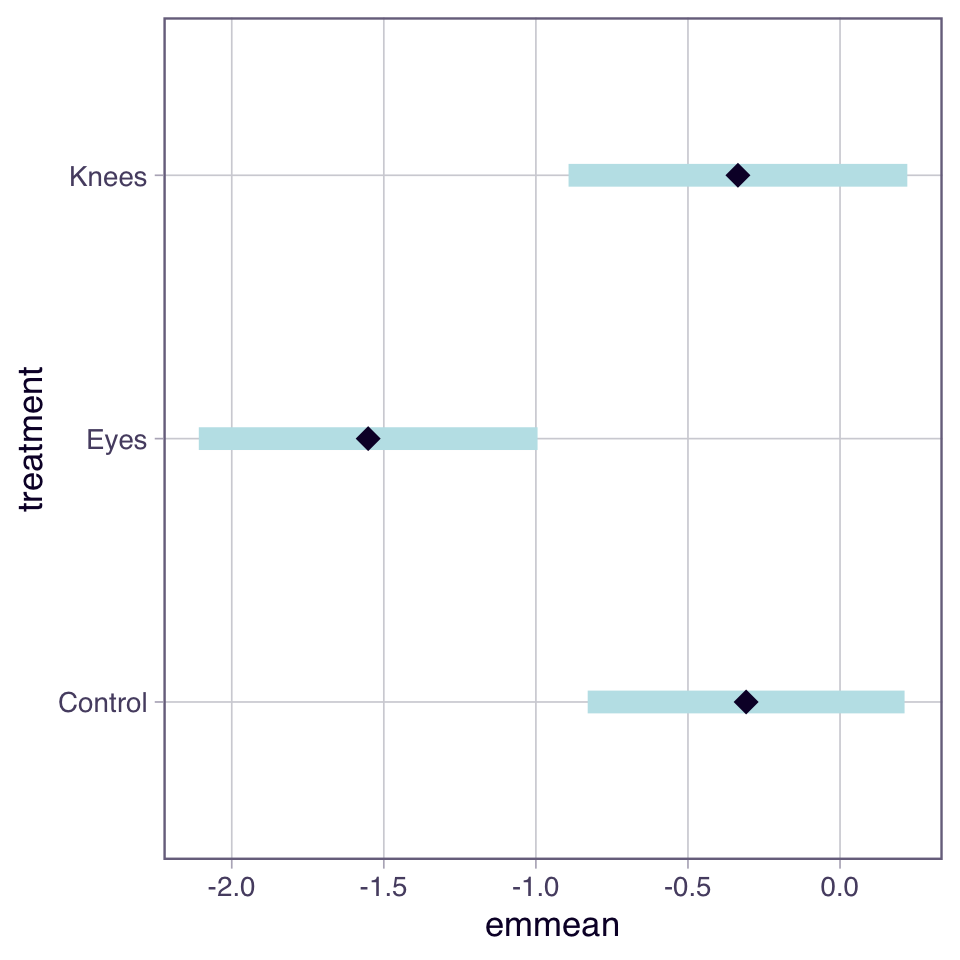
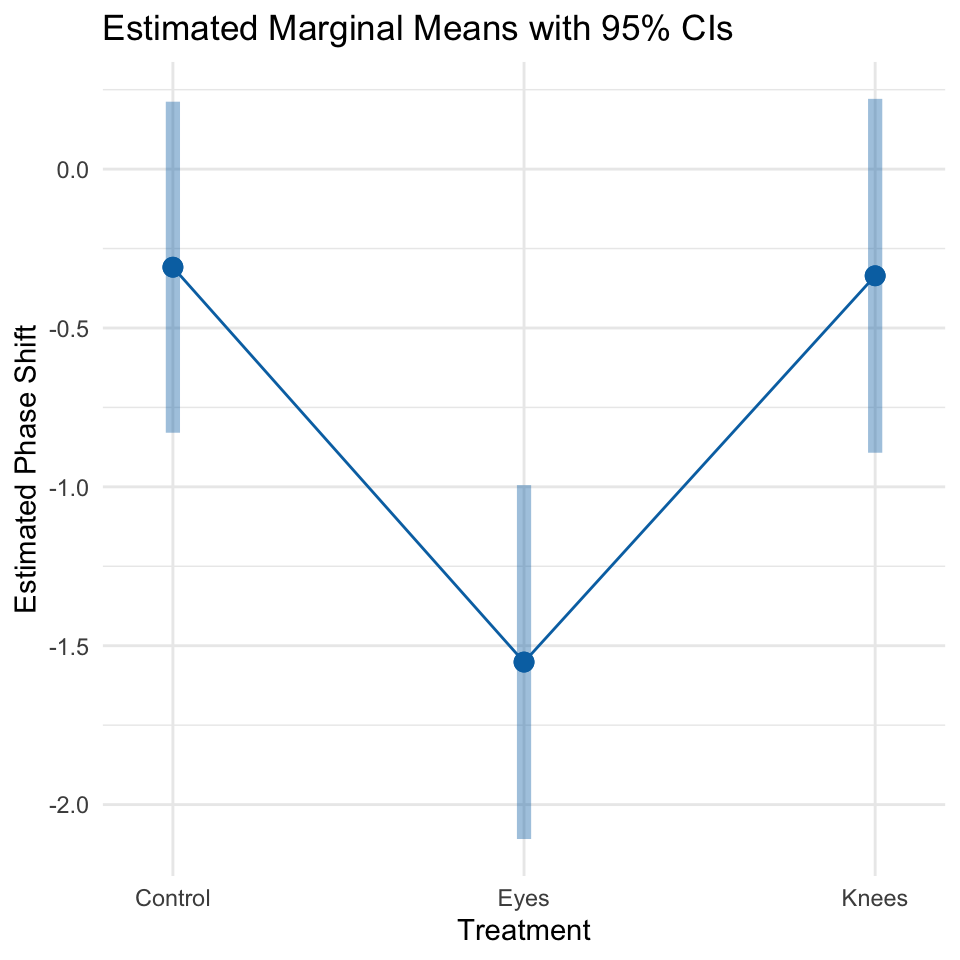
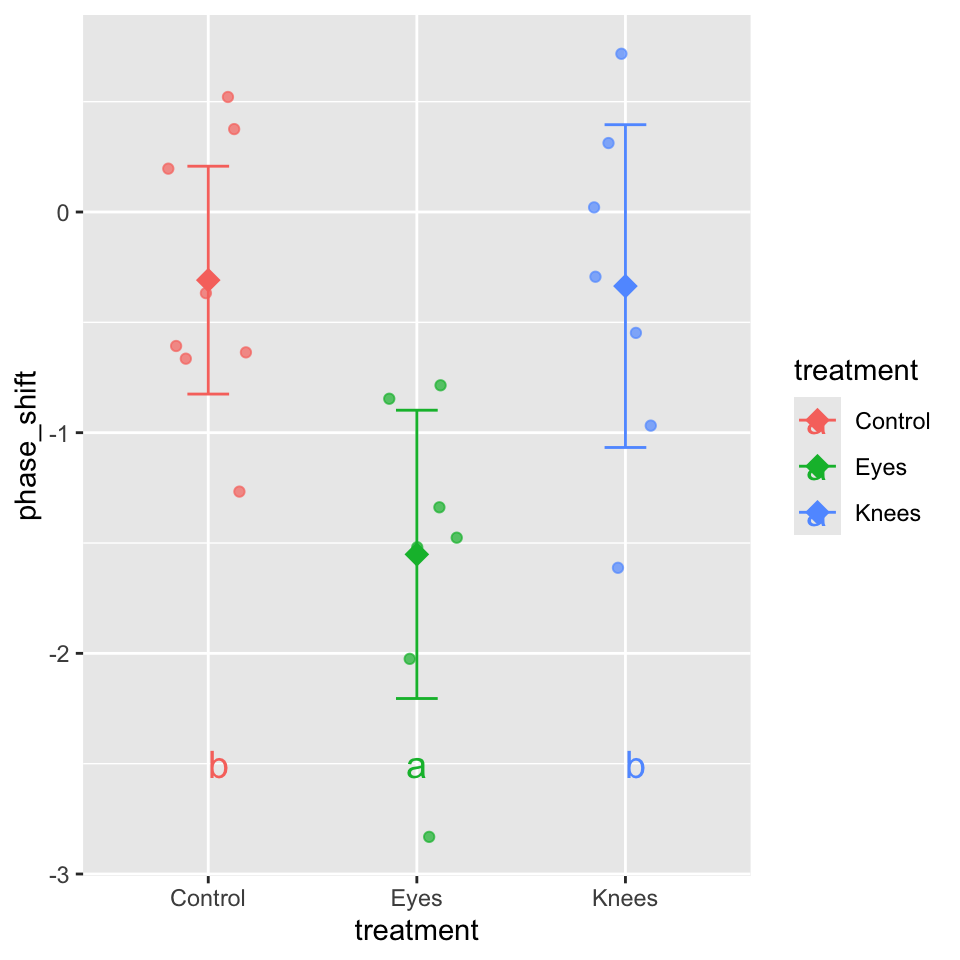
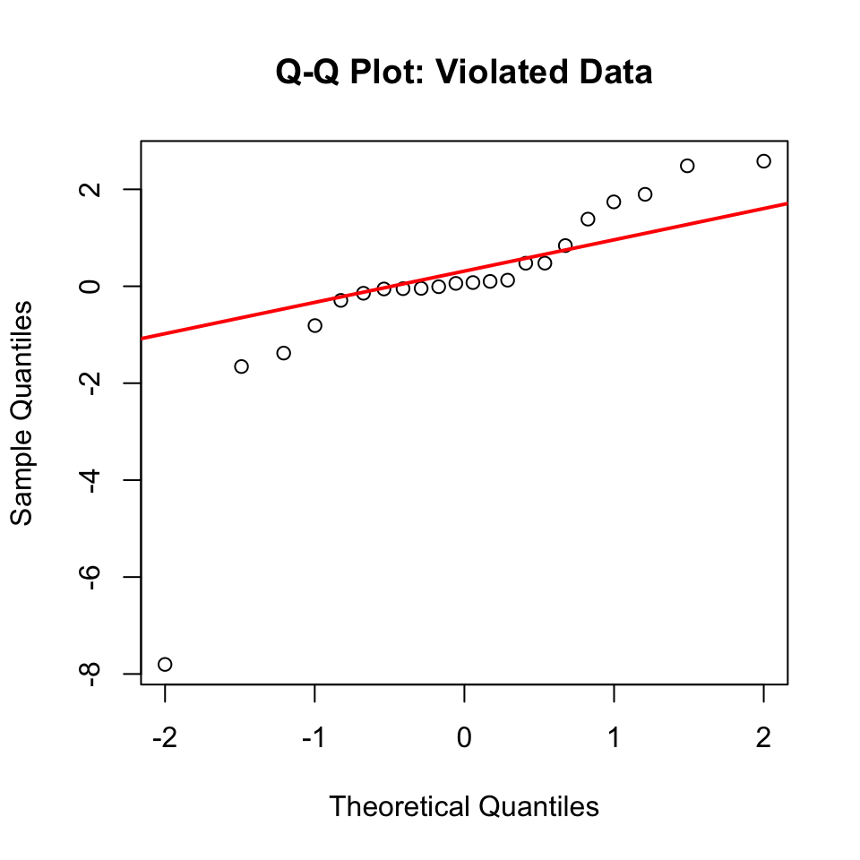

## FSA v0.10.1. See citation('FSA') if used in publication.
## Run fishR() for related website and fishR('IFAR') for related book.
library(ggfortify)
Loading required package: ggplot2
library(car) # functions for regression diagnostics, ANOVA, and VIF
Loading required package: carData
Registered S3 methods overwritten by 'car':
method from
hist.boot FSA
confint.boot FSA
Attaching package: 'car'
The following object is masked from 'package:FSA':
bootCase
library(emmeans) # calculates and compares adjusted means from statistical models
Welcome to emmeans.
Caution: You lose important information if you filter this package's results.
See '? untidy'
library(patchwork) # Combines multiple ggplot2 plots into a single composite figurelibrary(broom) # Converts statistical model outputs into tidy data frameslibrary(tidyverse) # includes ggplot2, dplyr, tidyr, etc.
── Conflicts ────────────────────────────────────────── tidyverse_conflicts() ──
✖ dplyr::filter() masks stats::filter()
✖ dplyr::lag() masks stats::lag()
✖ dplyr::recode() masks car::recode()
✖ purrr::some() masks car::some()
ℹ Use the conflicted package (<http://conflicted.r-lib.org/>) to force all conflicts to become errors
# A tibble: 22 × 2
treatment phase_shift
<chr> <dbl>
1 Control 0.53
2 Control 0.36
3 Control 0.2
4 Control -0.37
5 Control -0.6
6 Control -0.64
7 Control -0.68
8 Control -1.27
9 Knees 0.73
10 Knees 0.31
# ℹ 12 more rows
#| message: false#| warning: false#| paged-print: false## Using the car package to check assumptions# Levene's test for homogeneity of variancelevene_test <-leveneTest(phase_shift ~ treatment, data = c_df)
Warning in leveneTest.default(y = y, group = group, ...): group coerced to
factor.
levene_test
Levene's Test for Homogeneity of Variance (center = median)
Df F value Pr(>F)
group 2 0.1586 0.8545
19
Lecture 12: ANOVA Diagnostics
Shapiro-Wilk Normality Test
Null Hypothesis is that they are normally distributed
So you want a non significant result here
#| message: false#| warning: false#| paged-print: false# Normality test of residualsshapiro_test <-shapiro.test(residuals(model_aov))shapiro_test
Shapiro-Wilk normality test
data: residuals(model_aov)
W = 0.95893, p-value = 0.468
Lecture 12: ANOVA Post-Hoc Testing
When ANOVA rejects H₀, we need to determine which groups differ.
Example: Using Tukey’s HSD to compare all pairs of treatments in the circadian rhythm data.
Estimated Marginal Means (EMMs), also called least-squares means, are model-based predictions of group means that come from your fitted statistical model rather than directly from your raw data.
Key Concepts
In a one-way ANOVA, EMMs are straightforward:
EMMs = Group means (when you have balanced data and no covariates)
They represent the “expected” or “predicted” value for each group according to your model
They’re called “marginal” because in more complex designs, they’re averaged over (or “marginalized” over) other factors
Why Use EMMs Instead of Simple Means?
For one-way ANOVA, you might wonder: “Why not just use group_by() %>% summarize(mean())?”
Here’s why EMMs are valuable:
Consistency across models: EMMs work the same way whether you have one-way ANOVA, two-way ANOVA, ANCOVA, or more complex designs
Built-in inference: The emmeans package provides standard errors, confidence intervals, and easy comparisons
Adjusted means: In more complex models (with covariates), EMMs give you adjusted means at meaningful reference points
Professional reporting: EMMs are the standard in academic publications
How Are EMMs Calculated?
In One-Way ANOVA: EMMs = Group Means
Let’s verify this by comparing EMMs to simple group means:
# Calculate simple group meansgroup_means <- c_df %>%group_by(treatment) %>%summarize(sample_mean =mean(phase_shift),sample_sd =sd(phase_shift),n =n() )# Get EMMs as a data frameemm_df <-as.data.frame(emmeans_df)# Combine for comparisoncomparison <- group_means %>%left_join(emm_df %>%select(treatment, emmean, SE), by ="treatment") %>%mutate(difference =round(sample_mean - emmean, 10) # Round to show they're identical )comparison
Key insight: In a one-way ANOVA, the EMMs are exactly equal to the group means!
The Mathematical Formula
For one-way ANOVA, the EMM for group \(j\) is calculated as:
\[\text{EMM}_j = \hat{\beta}_0 + \hat{\beta}_j\]
Where: - \(\hat{\beta}_0\) is the intercept (mean of reference group) - \(\hat{\beta}_j\) is the coefficient for group \(j\) (or 0 for the reference group)
contrast estimate SE df t.ratio p.value
Control - Eyes 1.243 0.364 19 3.411 0.0088
Control - Knees 0.027 0.364 19 0.074 0.9998
Eyes - Knees -1.216 0.376 19 -3.231 0.0131
P value adjustment: sidak method for 3 tests
What is the ESTIMATE?
The estimate is the difference between two group means.
What is the SE (Standard Error)?
The SE is the standard error of the difference between two means.
It tells you how much uncertainty there is in your estimate of the difference. The SE depends on:
The variability within each group (residual variance from your model)
The sample sizes of the groups being compared
How They Work Together
The t-ratio = estimate / SE tells you how many standard errors away from zero your difference is:
Control - Eyes: 1.243 / 0.364 = 3.41 → far from zero → significant!
Control - Knees: 0.027 / 0.364 = 0.074 → very close to zero → not significant
# Letters to indicate groups with similar meansletter_groups <- multcomp::cld(emmeans_df, Letters = letters, adjust ="sidak")letter_groups
treatment emmean SE df lower.CL upper.CL .group
Eyes -1.551 0.266 19 -2.25 -0.855 a
Knees -0.336 0.266 19 -1.03 0.361 b
Control -0.309 0.249 19 -0.96 0.343 b
Confidence level used: 0.95
Conf-level adjustment: sidak method for 3 estimates
P value adjustment: sidak method for 3 tests
significance level used: alpha = 0.05
NOTE: If two or more means share the same grouping symbol,
then we cannot show them to be different.
But we also did not show them to be the same.
Can do in one go as well
#| message: false#| warning: false#| paged-print: false# Using emmeans package for post-hoc comparisons# Compact letter display (grouping)cld_result <-emmeans(model_aov, "treatment") %>% multcomp::cld(Letters = letters, adjust ="sidak")cld_result
treatment emmean SE df lower.CL upper.CL .group
Eyes -1.551 0.266 19 -2.25 -0.855 a
Knees -0.336 0.266 19 -1.03 0.361 b
Control -0.309 0.249 19 -0.96 0.343 b
Confidence level used: 0.95
Conf-level adjustment: sidak method for 3 estimates
P value adjustment: sidak method for 3 tests
significance level used: alpha = 0.05
NOTE: If two or more means share the same grouping symbol,
then we cannot show them to be different.
But we also did not show them to be the same.
Plotting the EMMEANS
plot(emmeans_df)

Lecture 12: ANOVA Post-Hoc Testing
#| message: false#| warning: false#| paged-print: false# Using emmeans package for post-hoc comparisons# Visualize the resultsemmip(model_aov, ~ treatment, CIs =TRUE) +theme_minimal() +labs(title ="Estimated Marginal Means with 95% CIs",x ="Treatment",y ="Estimated Phase Shift")

Planned comparisons
levels(c_df$treatment) # See the order
NULL
# Get estimated marginal meansemm <-emmeans(model_aov, "treatment")# Define your specific planned comparisonplanned_contrasts <-contrast(emm,method =list("control vs eyes"=c(1, -1, 0),"control vs knees"=c(1, 0, -1))) # View resultsplanned_contrasts
contrast estimate SE df t.ratio p.value
control vs eyes 1.243 0.364 19 3.411 0.0029
control vs knees 0.027 0.364 19 0.074 0.9418
Lecture 12: ANOVA Post-Hoc Testing

Lecture 12: ANOVA Reporting results
Formal scientific writing example:
“The effect of light treatment on circadian rhythm phase shift was analyzed using a one-way ANOVA. There was a significant effect of treatment on phase shift (F(2, 19) = 7.29, p = 0.004, η² = 0.43). Post-hoc comparisons using Tukey’s HSD test indicated that the mean phase shift for the Eyes treatment (M = -1.55 h, SD = 0.71) was significantly different from both the Control treatment (M = -0.31 h, SD = 0.62) and the Knees treatment (M = -0.34 h, SD = 0.79). However, the Control and Knees treatments did not significantly differ from each other. These results suggest that light exposure to the eyes, but not to the knees, impacts circadian rhythm phase shifts.”
NON PARAMETRIC ANOVA
# Create data with outliers and skewnessset.seed(42)v_circ_df <- c_df %>%mutate(phase_shift_violated =case_when(# Control: Very tight, almost no variance treatment =="Control"~ phase_shift *0.15,# Knees: Also tight variance treatment =="Knees"~ phase_shift *1.3,# Eyes: EXTREME spread - compress middle values, huge outliers treatment =="Eyes"~ { n <-length(phase_shift)c(phase_shift[1:(n-3)] *1.2, # Very compressed normal values phase_shift[(n-2)] *2, # Moderate outlier phase_shift[(n-1)] *2.4, # Extreme outlier 1 phase_shift[n] *4) # EXTREME outlier 2 } ) )# Fit model with violated assumptionsviolated_model <-lm(phase_shift_violated ~ treatment, data = v_circ_df)
theme_minimal() +labs(title ="Modified Data with Violations",subtitle ="Median with IQR",x ="Light Treatment",y ="Phase Shift (hours)")
<theme> List of 147
$ line : <ggplot2::element_line>
..@ colour : chr "black"
..@ linewidth : num 0.5
..@ linetype : num 1
..@ lineend : chr "butt"
..@ linejoin : chr "round"
..@ arrow : logi FALSE
..@ arrow.fill : chr "black"
..@ inherit.blank: logi TRUE
$ rect : <ggplot2::element_rect>
..@ fill : chr "white"
..@ colour : chr "black"
..@ linewidth : num 0.5
..@ linetype : num 1
..@ linejoin : chr "round"
..@ inherit.blank: logi TRUE
$ text : <ggplot2::element_text>
..@ family : chr ""
..@ face : chr "plain"
..@ italic : chr NA
..@ fontweight : num NA
..@ fontwidth : num NA
..@ colour : chr "black"
..@ size : num 11
..@ hjust : num 0.5
..@ vjust : num 0.5
..@ angle : num 0
..@ lineheight : num 0.9
..@ margin : <ggplot2::margin> num [1:4] 0 0 0 0
..@ debug : logi FALSE
..@ inherit.blank: logi TRUE
$ title : chr "Modified Data with Violations"
$ point : <ggplot2::element_point>
..@ colour : chr "black"
..@ shape : num 19
..@ size : num 1.5
..@ fill : chr "white"
..@ stroke : num 0.5
..@ inherit.blank: logi TRUE
$ polygon : <ggplot2::element_polygon>
..@ fill : chr "white"
..@ colour : chr "black"
..@ linewidth : num 0.5
..@ linetype : num 1
..@ linejoin : chr "round"
..@ inherit.blank: logi TRUE
$ geom : <ggplot2::element_geom>
..@ ink : chr "black"
..@ paper : chr "white"
..@ accent : chr "#3366FF"
..@ linewidth : num 0.5
..@ borderwidth: num 0.5
..@ linetype : int 1
..@ bordertype : int 1
..@ family : chr ""
..@ fontsize : num 3.87
..@ pointsize : num 1.5
..@ pointshape : num 19
..@ colour : NULL
..@ fill : NULL
$ spacing : 'simpleUnit' num 5.5points
..- attr(*, "unit")= int 8
$ margins : <ggplot2::margin> num [1:4] 5.5 5.5 5.5 5.5
$ aspect.ratio : NULL
$ axis.title : NULL
$ axis.title.x : <ggplot2::element_text>
..@ family : NULL
..@ face : NULL
..@ italic : chr NA
..@ fontweight : num NA
..@ fontwidth : num NA
..@ colour : NULL
..@ size : NULL
..@ hjust : NULL
..@ vjust : num 1
..@ angle : NULL
..@ lineheight : NULL
..@ margin : <ggplot2::margin> num [1:4] 2.75 0 0 0
..@ debug : NULL
..@ inherit.blank: logi TRUE
$ axis.title.x.top : <ggplot2::element_text>
..@ family : NULL
..@ face : NULL
..@ italic : chr NA
..@ fontweight : num NA
..@ fontwidth : num NA
..@ colour : NULL
..@ size : NULL
..@ hjust : NULL
..@ vjust : num 0
..@ angle : NULL
..@ lineheight : NULL
..@ margin : <ggplot2::margin> num [1:4] 0 0 2.75 0
..@ debug : NULL
..@ inherit.blank: logi TRUE
$ axis.title.x.bottom : NULL
$ axis.title.y : <ggplot2::element_text>
..@ family : NULL
..@ face : NULL
..@ italic : chr NA
..@ fontweight : num NA
..@ fontwidth : num NA
..@ colour : NULL
..@ size : NULL
..@ hjust : NULL
..@ vjust : num 1
..@ angle : num 90
..@ lineheight : NULL
..@ margin : <ggplot2::margin> num [1:4] 0 2.75 0 0
..@ debug : NULL
..@ inherit.blank: logi TRUE
$ axis.title.y.left : NULL
$ axis.title.y.right : <ggplot2::element_text>
..@ family : NULL
..@ face : NULL
..@ italic : chr NA
..@ fontweight : num NA
..@ fontwidth : num NA
..@ colour : NULL
..@ size : NULL
..@ hjust : NULL
..@ vjust : num 1
..@ angle : num -90
..@ lineheight : NULL
..@ margin : <ggplot2::margin> num [1:4] 0 0 0 2.75
..@ debug : NULL
..@ inherit.blank: logi TRUE
$ axis.text : <ggplot2::element_text>
..@ family : NULL
..@ face : NULL
..@ italic : chr NA
..@ fontweight : num NA
..@ fontwidth : num NA
..@ colour : chr "#4D4D4DFF"
..@ size : 'rel' num 0.8
..@ hjust : NULL
..@ vjust : NULL
..@ angle : NULL
..@ lineheight : NULL
..@ margin : NULL
..@ debug : NULL
..@ inherit.blank: logi TRUE
$ axis.text.x : <ggplot2::element_text>
..@ family : NULL
..@ face : NULL
..@ italic : chr NA
..@ fontweight : num NA
..@ fontwidth : num NA
..@ colour : NULL
..@ size : NULL
..@ hjust : NULL
..@ vjust : num 1
..@ angle : NULL
..@ lineheight : NULL
..@ margin : <ggplot2::margin> num [1:4] 2.2 0 0 0
..@ debug : NULL
..@ inherit.blank: logi TRUE
$ axis.text.x.top : <ggplot2::element_text>
..@ family : NULL
..@ face : NULL
..@ italic : chr NA
..@ fontweight : num NA
..@ fontwidth : num NA
..@ colour : NULL
..@ size : NULL
..@ hjust : NULL
..@ vjust : NULL
..@ angle : NULL
..@ lineheight : NULL
..@ margin : <ggplot2::margin> num [1:4] 0 0 4.95 0
..@ debug : NULL
..@ inherit.blank: logi TRUE
$ axis.text.x.bottom : <ggplot2::element_text>
..@ family : NULL
..@ face : NULL
..@ italic : chr NA
..@ fontweight : num NA
..@ fontwidth : num NA
..@ colour : NULL
..@ size : NULL
..@ hjust : NULL
..@ vjust : NULL
..@ angle : NULL
..@ lineheight : NULL
..@ margin : <ggplot2::margin> num [1:4] 4.95 0 0 0
..@ debug : NULL
..@ inherit.blank: logi TRUE
$ axis.text.y : <ggplot2::element_text>
..@ family : NULL
..@ face : NULL
..@ italic : chr NA
..@ fontweight : num NA
..@ fontwidth : num NA
..@ colour : NULL
..@ size : NULL
..@ hjust : num 1
..@ vjust : NULL
..@ angle : NULL
..@ lineheight : NULL
..@ margin : <ggplot2::margin> num [1:4] 0 2.2 0 0
..@ debug : NULL
..@ inherit.blank: logi TRUE
$ axis.text.y.left : <ggplot2::element_text>
..@ family : NULL
..@ face : NULL
..@ italic : chr NA
..@ fontweight : num NA
..@ fontwidth : num NA
..@ colour : NULL
..@ size : NULL
..@ hjust : NULL
..@ vjust : NULL
..@ angle : NULL
..@ lineheight : NULL
..@ margin : <ggplot2::margin> num [1:4] 0 4.95 0 0
..@ debug : NULL
..@ inherit.blank: logi TRUE
$ axis.text.y.right : <ggplot2::element_text>
..@ family : NULL
..@ face : NULL
..@ italic : chr NA
..@ fontweight : num NA
..@ fontwidth : num NA
..@ colour : NULL
..@ size : NULL
..@ hjust : NULL
..@ vjust : NULL
..@ angle : NULL
..@ lineheight : NULL
..@ margin : <ggplot2::margin> num [1:4] 0 0 0 4.95
..@ debug : NULL
..@ inherit.blank: logi TRUE
$ axis.text.theta : NULL
$ axis.text.r : <ggplot2::element_text>
..@ family : NULL
..@ face : NULL
..@ italic : chr NA
..@ fontweight : num NA
..@ fontwidth : num NA
..@ colour : NULL
..@ size : NULL
..@ hjust : num 0.5
..@ vjust : NULL
..@ angle : NULL
..@ lineheight : NULL
..@ margin : <ggplot2::margin> num [1:4] 0 2.2 0 2.2
..@ debug : NULL
..@ inherit.blank: logi TRUE
$ axis.ticks : <ggplot2::element_blank>
$ axis.ticks.x : NULL
$ axis.ticks.x.top : NULL
$ axis.ticks.x.bottom : NULL
$ axis.ticks.y : NULL
$ axis.ticks.y.left : NULL
$ axis.ticks.y.right : NULL
$ axis.ticks.theta : NULL
$ axis.ticks.r : NULL
$ axis.minor.ticks.x.top : NULL
$ axis.minor.ticks.x.bottom : NULL
$ axis.minor.ticks.y.left : NULL
$ axis.minor.ticks.y.right : NULL
$ axis.minor.ticks.theta : NULL
$ axis.minor.ticks.r : NULL
$ axis.ticks.length : 'rel' num 0.5
$ axis.ticks.length.x : NULL
$ axis.ticks.length.x.top : NULL
$ axis.ticks.length.x.bottom : NULL
$ axis.ticks.length.y : NULL
$ axis.ticks.length.y.left : NULL
$ axis.ticks.length.y.right : NULL
$ axis.ticks.length.theta : NULL
$ axis.ticks.length.r : NULL
$ axis.minor.ticks.length : 'rel' num 0.75
$ axis.minor.ticks.length.x : NULL
$ axis.minor.ticks.length.x.top : NULL
$ axis.minor.ticks.length.x.bottom: NULL
$ axis.minor.ticks.length.y : NULL
$ axis.minor.ticks.length.y.left : NULL
$ axis.minor.ticks.length.y.right : NULL
$ axis.minor.ticks.length.theta : NULL
$ axis.minor.ticks.length.r : NULL
$ axis.line : <ggplot2::element_blank>
$ axis.line.x : NULL
$ axis.line.x.top : NULL
$ axis.line.x.bottom : NULL
$ axis.line.y : NULL
$ axis.line.y.left : NULL
$ axis.line.y.right : NULL
$ axis.line.theta : NULL
$ axis.line.r : NULL
$ legend.background : <ggplot2::element_blank>
$ legend.margin : NULL
$ legend.spacing : 'rel' num 2
$ legend.spacing.x : NULL
$ legend.spacing.y : NULL
$ legend.key : <ggplot2::element_blank>
$ legend.key.size : 'simpleUnit' num 1.2lines
..- attr(*, "unit")= int 3
$ legend.key.height : NULL
$ legend.key.width : NULL
$ legend.key.spacing : NULL
$ legend.key.spacing.x : NULL
$ legend.key.spacing.y : NULL
$ legend.key.justification : NULL
$ legend.frame : NULL
$ legend.ticks : NULL
$ legend.ticks.length : 'rel' num 0.2
$ legend.axis.line : NULL
$ legend.text : <ggplot2::element_text>
..@ family : NULL
..@ face : NULL
..@ italic : chr NA
..@ fontweight : num NA
..@ fontwidth : num NA
..@ colour : NULL
..@ size : 'rel' num 0.8
..@ hjust : NULL
..@ vjust : NULL
..@ angle : NULL
..@ lineheight : NULL
..@ margin : NULL
..@ debug : NULL
..@ inherit.blank: logi TRUE
$ legend.text.position : NULL
$ legend.title : <ggplot2::element_text>
..@ family : NULL
..@ face : NULL
..@ italic : chr NA
..@ fontweight : num NA
..@ fontwidth : num NA
..@ colour : NULL
..@ size : NULL
..@ hjust : num 0
..@ vjust : NULL
..@ angle : NULL
..@ lineheight : NULL
..@ margin : NULL
..@ debug : NULL
..@ inherit.blank: logi TRUE
$ legend.title.position : NULL
$ legend.position : chr "right"
$ legend.position.inside : NULL
$ legend.direction : NULL
$ legend.byrow : NULL
$ legend.justification : chr "center"
$ legend.justification.top : NULL
$ legend.justification.bottom : NULL
$ legend.justification.left : NULL
$ legend.justification.right : NULL
$ legend.justification.inside : NULL
[list output truncated]
@ complete: logi TRUE
@ validate: logi TRUE
# Shapiro-Wilk test on residualsshapiro.test(resid(violated_model))
Shapiro-Wilk normality test
data: resid(violated_model)
W = 0.7246, p-value = 4.091e-05
# Q-Q plotqqnorm(resid(violated_model), main ="Q-Q Plot: Violated Data")qqline(resid(violated_model), col ="red", lwd =2)

# Levene's testleveneTest(phase_shift_violated ~ treatment, data = v_circ_df)
Warning in leveneTest.default(y = y, group = group, ...): group coerced to
factor.
Levene's Test for Homogeneity of Variance (center = median)
Df F value Pr(>F)
group 2 2.4082 0.1169
19
Performing the Kruskal-Wallis Test
Running Kruskal-Wallis on Original Data
Even though assumptions are met, let’s compare results:
# Kruskal-Wallis test on original datakruskal_original_result <-kruskal.test( phase_shift ~ treatment, data = c_df)# Display resultskruskal_original_result
Kruskal-Wallis rank sum test
data: phase_shift by treatment
Kruskal-Wallis chi-squared = 9.4231, df = 2, p-value = 0.008991
Compare to parametric ANOVA:
anova(model_aov)
Analysis of Variance Table
Response: phase_shift
Df Sum Sq Mean Sq F value Pr(>F)
treatment 2 7.2245 3.6122 7.2894 0.004472 **
Residuals 19 9.4153 0.4955
---
Signif. codes: 0 '***' 0.001 '**' 0.01 '*' 0.05 '.' 0.1 ' ' 1
Kruskal-Wallis on Violated Data
Non-Parametric Test Handles Violations
Running Kruskal-Wallis on data with assumption violations:
# Kruskal-Wallis test on violated datakruskal_violated_result <-kruskal.test( phase_shift_violated ~ treatment, data = v_circ_df)kruskal_violated_result
Kruskal-Wallis rank sum test
data: phase_shift_violated by treatment
Kruskal-Wallis chi-squared = 11.282, df = 2, p-value = 0.00355
Compare parametric ANOVA on same violated data:
anova(violated_model)
Analysis of Variance Table
Response: phase_shift_violated
Df Sum Sq Mean Sq F value Pr(>F)
treatment 2 52.190 26.0951 5.5781 0.01242 *
Residuals 19 88.884 4.6781
---
Signif. codes: 0 '***' 0.001 '**' 0.01 '*' 0.05 '.' 0.1 ' ' 1
Key observations: - Both tests still detect differences - Kruskal-Wallis more robust to violations - Parametric test may give misleading results when assumptions violated - Non-parametric test maintains validity
Post-Hoc Tests for Kruskal-Wallis
Pairwise Comparisons After Significant Kruskal-Wallis
Just like ANOVA, we need post-hoc tests to identify which groups differ:
# Pairwise Wilcoxon rank sum tests with # Bonferroni correctionpairwise_original_result <-pairwise.wilcox.test(x = v_circ_df$phase_shift,g = v_circ_df$treatment,p.adjust.method ="bonferroni")pairwise_original_result
Pairwise comparisons using Wilcoxon rank sum exact test
data: v_circ_df$phase_shift and v_circ_df$treatment
Control Eyes
Eyes 0.0037 -
Knees 1.0000 0.0787
P value adjustment method: bonferroni
Interpretation of p-values: - Control vs Eyes: p = 0.024 (significant) - Control vs Knees: p = 1.000 (not significant) - Eyes vs Knees: p = 0.078 (not significant)
Common adjustment methods: - "bonferroni": Most conservative - "holm": Less conservative than Bonferroni - "BH": Benjamini-Hochberg (controls false discovery rate) - "none": No adjustment (not recommended)
Pairwise comparisons using Wilcoxon rank sum exact test
data: v_circ_df$phase_shift_violated and v_circ_df$treatment
Control Eyes
Eyes 0.00093 -
Knees 1.00000 0.05245
P value adjustment method: bonferroni
Dunn’s Test: Alternative Post-Hoc
Dunn’s Test for Multiple Comparisons
Dunn’s test is specifically designed for Kruskal-Wallis post-hoc comparisons:
#| message: false#| warning: falselibrary(FSA)# Dunn's test on original datadunn_original_result <-dunnTest( phase_shift ~ treatment,data = c_df,method ="bonferroni")
Warning: treatment was coerced to a factor.
Kruskal-Wallis rank sum test
data: x and g
Kruskal-Wallis chi-squared = 9.4231, df = 2, p-value = 0.01
Dunn's Pairwise Comparison of x by g
(Bonferroni)
Col Mean-│
Row Mean │ Control Eyes
─────────┼──────────────────────
Eyes │ 2.778928
│ 0.0164*
│
Knees │ 0.143462 -2.551778
│ 1.0000 0.0322*
α = 0.05
Reject Ho if p ≤ α, where p = Pr(|Z| ≥ |z|)
dunn_original_result
Dunn (1964) Kruskal-Wallis multiple comparison
p-values adjusted with the Bonferroni method.
Comparison Z P.unadj P.adj
1 Control - Eyes 2.7789287 0.005453849 0.01636155
2 Control - Knees 0.1434629 0.885924641 1.00000000
3 Eyes - Knees -2.5517789 0.010717452 0.03215236
Advantages of Dunn’s test: - Designed specifically for Kruskal-Wallis - Provides Z-statistics in addition to p-values - Multiple adjustment methods available - More appropriate than multiple Wilcoxon tests
Z-statistic is a standardized test statistic that tells you how many standard deviations an observation or difference is from the expected value (usually zero, meaning “no difference”).
Dunn’s Test on Violated Data
#| paged-print: false# Dunn's test on violated datadunn_violated_result <-dunnTest( phase_shift_violated ~ treatment,data = v_circ_df,method ="bonferroni")
Warning: treatment was coerced to a factor.
Kruskal-Wallis rank sum test
data: x and g
Kruskal-Wallis chi-squared = 11.2818, df = 2, p-value = 0
Dunn's Pairwise Comparison of x by g
(Bonferroni)
Col Mean-│
Row Mean │ Control Eyes
─────────┼──────────────────────
Eyes │ 3.241197
│ 0.0036*
│
Knees │ 0.733254 -2.428305
│ 1.0000 0.0455*
α = 0.05
Reject Ho if p ≤ α, where p = Pr(|Z| ≥ |z|)
dunn_violated_result
Dunn (1964) Kruskal-Wallis multiple comparison
p-values adjusted with the Bonferroni method.
Comparison Z P.unadj P.adj
1 Control - Eyes 3.2411980 0.001190285 0.003570855
2 Control - Knees 0.7332546 0.463403147 1.000000000
3 Eyes - Knees -2.4283057 0.015169551 0.045508653
Interpreting Z-statistics: - Large |Z| values indicate bigger differences - Z > 1.96 approximately equivalent to p < 0.05 - Sign indicates direction of difference
Which post F test to use?
Wilcoxon Rank-Sum Test (Mann-Whitney U)
What it does: Pairwise comparisons between two groups at a time
Ranking: Re-ranks data separately for each pair of groups being compared
Use case: When you want simple pairwise comparisons
Correction: Typically uses Bonferroni or other p-value adjustments